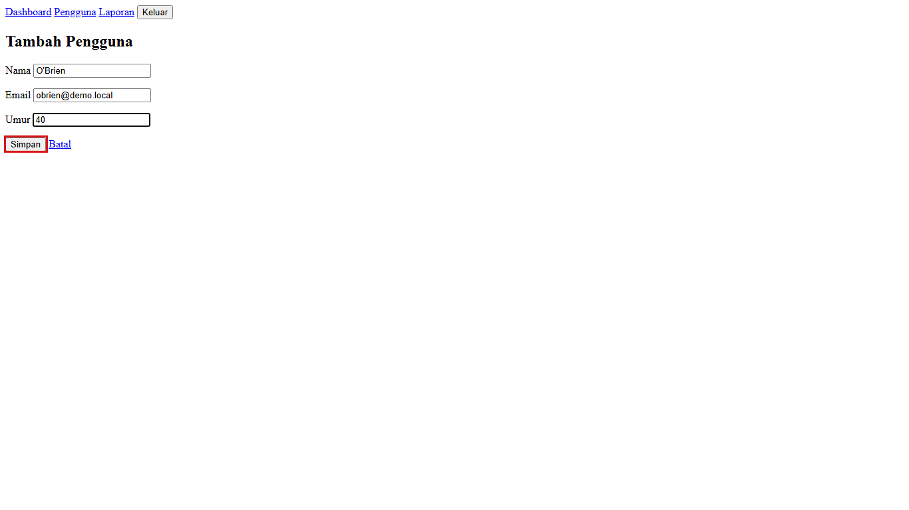
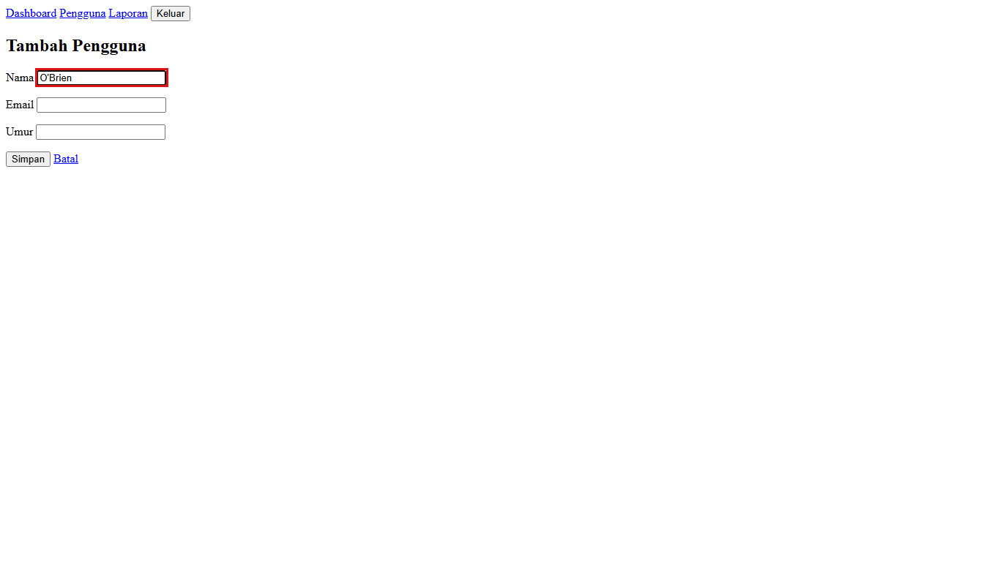
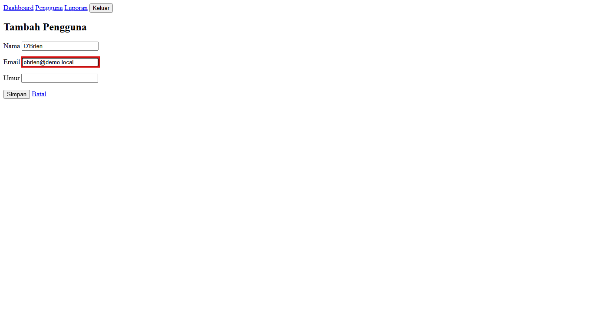
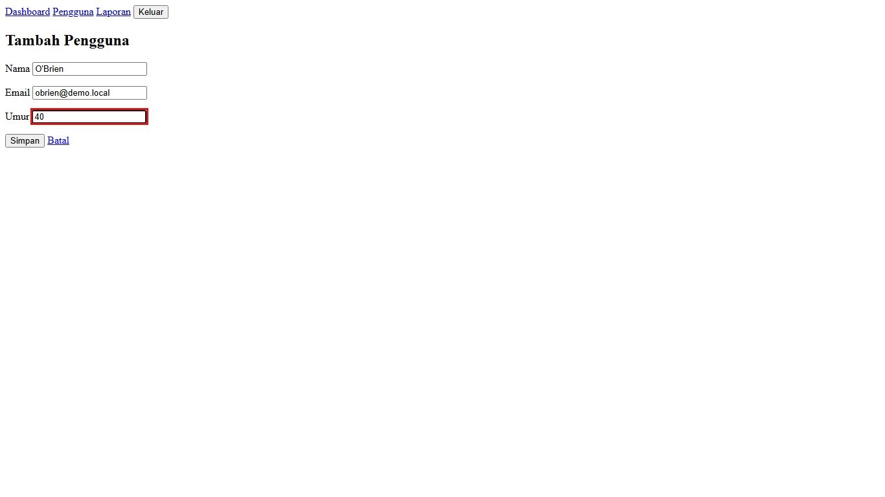

Web HR
Uji modul Pengguna
Berjalan
08:42
Test case 3 dari 15
Jeda
Ambil alih
Hentikan
hr-dev.kantor.local/users/new
LIVE

Langkah 4
Klik tombol "Simpan"
Ambil alih untuk mengklik langsung di layar ini
Langkah sebelumnya di test case ini

1
Isi "Nama"

2
Isi "Email"

3
Isi "Umur"
4
Klik "Simpan"